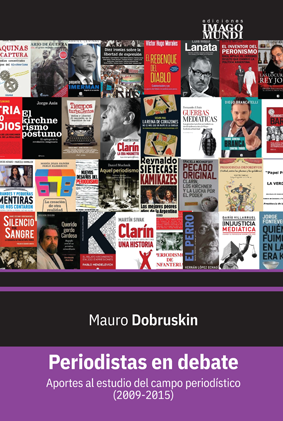

Periodistas en debate. El campo periodístico argentino (2009-2015)

Presentación
Legales
Agradecimientos
Pre texto
Introducción
1 Estado de la cuestión y consideraciones teórico-metodológicas
1.1 Antecedentes sobre la temática
1.2 Enfoque conceptual
1.2.1 El campo periodístico
1.2.2 La credibilidad
1.2.3 La legitimidad del campo periodístico
1.2.4 Autonomización del campo periodístico
2 Descripción del campo periodístico en la Argentina (2009-2015)
2.1 Los periodistas y el fenómeno editorial
2.2 El contexto político del conflicto en la mirada de la prensa
2.3 Acerca del campo periodístico
2.3.1 Propuesta de clasificación de periodistas según su lugar en el campo
2.3.2 Categorías de periodistas
2.3.3 Pseudoperiodistas
3 Análisis de contenido del corpus bibliográfico
3.1 Corpus de análisis
3.2 Periodización
3.2.1 Etapa preparatoria
3.2.2 Periodismo de guerra
Post Scriptum
Bibliografía
Colofón